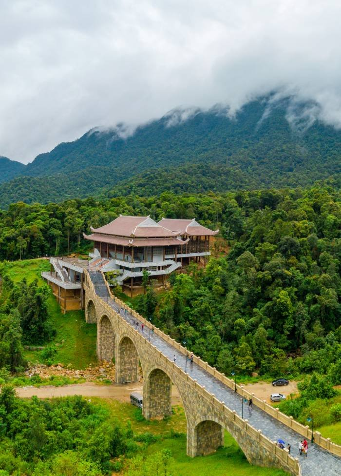
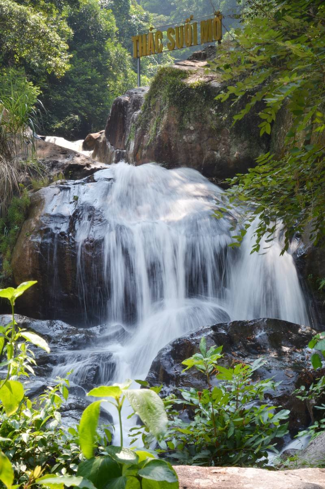
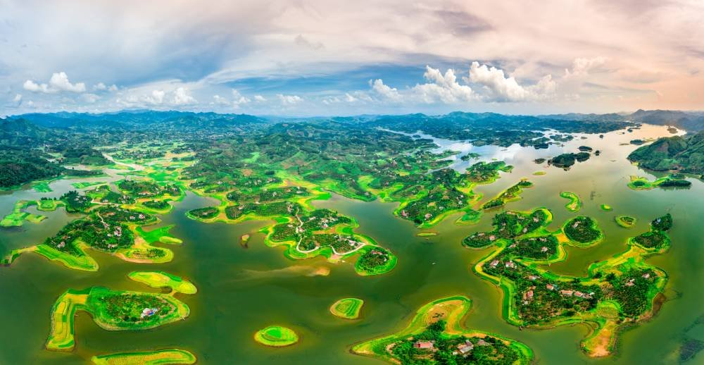

Tỉnh Bắc Giang nằm ở tọa độ địa lý từ 21007’ đến 21037’ vĩ độ bắc, từ 105053’ đến 107002’ kinh độ đông. Bắc Giang là một tỉnh thuộc vùng Đông Bắc Việt Nam, phía Nam giáp các tỉnh Bắc Ninh và Hải Dương, phía Bắc giáp tỉnh Lạng Sơn, phía Đông giáp tỉnh Quảng Ninh, phía Tây giáp tỉnh Thái Nguyên, đặc biệt phía Tây Nam là Thủ đô Hà Nội. Bắc Giang nằm trên hành lang kinh tế Hà Nội – Hải Phòng; Lạng Sơn – Nam Ninh (Trung Quốc), liền kề vùng kinh tế trọng điểm của Miền Bắc.
Tỉnh Bắc Giang có diện tích tự nhiên là 3.851,4 km². Tỉnh có 10 đơn vị hành chính cấp tỉnh gồm: Thành phố Bắc Giang và 9 huyện, trong đó có 6 huyện miền núi (Lục Ngạn, Lục Nam, Yên Thế, Lạng Giang, Yên Dũng, Tân Yên), 01 huyện vùng cao (Sơn Động) và 02 huyện trung du, đồng bằng (Hiệp Hòa, Việt Yên). Trung tâm tỉnh là thành phố Bắc Giang là trung tâm hành chính của tỉnh, cách Thủ đô Hà Nội 50 km; cách cửa khẩu Hữu Nghị (Lạng Sơn) 110 km; cách sân bay quốc tế Nội Bài 50 km; cách cảng biển Hải Phòng và cảng biển nước sâu Cái Lân - Quảng Ninh 130 km.
Địa hình Bắc Giang gồm 2 tiểu vùng miền núi và trung du có đồng bằng xem kẽ. Vùng trung du có đồng bằng xen kẽ chiếm 28% diện tích toàn tỉnh, bao gồm các huyện: Hiệp Hoà, Việt Yên và thành phố Bắc Giang, vùng miền núi chiếm 72% diện tích, bao gồm các huyện: Sơn Động, Lục Nam, Lục Ngạn, Yên Thế, Tân Yên, Yên Dũng và Lạng Giang; trong đó, một phần các huyện Lục Ngạn, Lục Nam, Yên thế và huyện Sơn Động là vùng núi cao. Với đặc điểm địa hình đa dạng (cả đồng bằng, trung du và miền núi) là thuận lợi để phát triển nền nông nghiệp đa dạng sinh học, với nhiều cây trồng vật nuôi có giá trị kinh tế, đáp ứng được nhu cầu đa dạng của thị trường.
Bắc Giang nằm trong vùng khí hậu nhiệt đới gió mùa khu vực Đông Bắc Việt Nam, một năm có bốn mùa rõ rệt. Mùa Đông có khí hậu khô, lạnh; mùa Hè khí hậu nóng, ẩm; mùa Xuân và mùa Thu khí hậu ôn hòa. Nhiệt độ trung bình năm khoảng 230-240 C. Lượng mưa hàng năm đủ đáp ứng nhu cầu nước cho sản xuất và đời sống. Lượng nắng trung bình hàng năm từ 1.500 - 1.700 giờ, thuận lợi cho canh tác, phát triển các cây trồng nhiệt đới, á nhiệt đới.
Bắc Giang có 382.200 ha đất tự nhiên, bao gồm 123.000 ha đất nông nghiệp, 110.000 ha đất lâm nghiệp, 66.500 ha đất đô thị, đất chuyên dùng và đất ở, còn lại khoảng 82.700 ha là các loại đất khác.Tỉnh Bắc Giang có 3 con sông lớn chảy qua với tổng chiều dài 347 km, lưu lượng lớn và có nước quanh năm. Ngoài ra còn có hệ thống ao, hồ, đầm, mạch nước ngầm có trữ lượng khá lớn. Lượng nước mặt, nước mưa, nước ngầm đủ khả năng cung cấp nước cho các ngành kinh tế và sinh hoạt.Về tài nguyên rừng: Bắc Giang hiện có khoảng 146.435,4 ha, trong đó, diện tích rừng đặc dụng là 14.093,3 ha, chiếm 9,6%; rừng phòng hộ có 18.879,9 ha, chiếm 12,9%; rừng sản xuất 113.462,2 ha, chiếm 77,5% tổng diện tích đất lâm nghiệp. Rừng ở Bắc Giang có vai trò cực kỳ quan trọng trong việc phòng, chống xói mòn, rửa trôi, ngăn lũ ống, lũ quét và có vai trò phòng hộ đầu nguồn bảo vệ vùng hạ du đồng bằng Bắc bộ. Bắc Giang cũng có tài nguyên khá phong phú về khoáng sản vớ các loại: than, kim loại, khoáng chất công nghiệp, khoáng sản, vật liệu xây dựng.
Bắc Giang có khoảng 1,8 triệu dân và có trên 20 dân tộc anh em cùng sinh sống, trong đó: Dân tộc Kinh chiếm đa số (88%), còn lại các dân tộc thiểu số khác chiếm 12%. Bắc Giang là tỉnh có số dân đông thứ 12 so với cả nước và có mật độ dân số bình quân cao hơn so với mật độ dân số bình quân cả nước.
Trước đây, cư dân của Bắc Giang sống chủ yếu bằng nông nghiệp, song trong những năm gần đây sự chuyển dịch cơ cấu kinh tế đã diễn ra mạnh mẽ. Nhiều khu, cụm công nghiệp được đầu tư, xây dựng và thu hút được các nhà đầu tư nước ngoài đến Bắc Giang. Tỷ trọng ngành công nghiệp – xây dựng, thương mại, dịch vụ đang dần chiếm ưu thế, tỷ trọng ngành nông, lâm, thuỷ sản trong cơ cấu kinh tế dần thu hẹp. Ngành nông, lâm thuỷ sản hiện đang được tái cơ cấu và phát triển theo hướng sản xuất hàng hoá chất lượng cao, đáp ứng yêu cầu của phát triển. Cơ sở hạ tầng giao thông, công nghệ thông tin, mạng internet tốc độ cao đảm bảo cho việc liên lạc và đáp ứng nhu cầu của nhà đầu tư.
Tính đến nay tỉnh Bắc Giang có 09 KCN đã được phê duyệt quy hoạch xây dựng, trong đó: Có 08 KCN đã được Thủ tướng Chính phủ chấp thuận chủ trương đầu tư với tổng diện tích đất tự nhiên đạt khoảng 1.792,5 ha; 06 KCN đang hoạt động. Điển hình như các khu CN Quang Châu, KCN Đình Trám, KCN Song khê- Nội Hoàng, KCN Vân Trung… Các Khu công nghiệp được quy hoạch nằm dọc theo Quốc lộ 1A mới Hà Nội – Lạng Sơn, đường tỉnh lộ 295, gần với các đô thị lớn, thuận lợi cả về đường bộ, đường sông, đường sắt, đường hàng không và các cảng sông, cảng biển. Trong vài năm trở lại đây, Bắc Giang trở thành một điểm sáng trong top các tỉnh có tốc độ tăng trưởng cao nhất cả nước.
Bắc Giang nằm trong vùng văn hoá Kinh Bắc có đặc điểm văn hóa phong phú và đa dạng, được quy tụ và thể hiện thông qua đời sống, phong tục, tập quán truyền thống của cộng đồng các dân tộc; biểu hiện qua các sinh hoạt tín ngưỡng dân gian, tín ngưỡng tôn giáo ở lễ hội truyền thống. Hàng năm, Bắc Giang có hơn 500 lễ hội truyền thống được tổ chức; một số lễ hội tiêu biểu ở Bắc Giang như: lễ hội Yên Thế; lễ hội Xương Giang; lễ hội Suối Mỡ; lễ hội Thổ Hà; lễ hội Chùa La (Vĩnh Nghiêm)…
Bắc Giang có hệ thống di tích lịch sử, văn hóa, kiến trúc nghệ thuật đặc sắc với hơn 2.230 di tích, trong đó có 731 di tích được xếp hạng. Nhiều công trình văn hóa và kiến trúc nghệ thuật đặc sắc, nổi tiếng trong đó, một số di tích, công trình tiêu biểu như: Di tích Quốc gia đặc biệt chùa Vĩnh Nghiêm huyện Yên Dũng, Di tích Quốc gia đặc biệt chùa Bổ Đà huyện Việt Yên, Những địa điểm khởi nghĩa Yên Thế, Di tích lịch sử chiến thắng Xương Giang, Khu du lịch tâm linh - sinh thái Tây Yên Tử... Các lễ hội cổ truyền vẫn được gìn giữ và ngày càng phát huy, mở rộng thêm. Đặc biệt, tỉnh Bắc Giang có 5 di sản văn hóa được UNESCO công nhận là: Mộc bản chùa Vĩnh Nghiêm; Dân ca Quan họ; Ca trù; Tín ngưỡng thờ Mẫu Tam phủ của người Việt; Thực hành Then của người Tày, Nùng, Thái ở Việt Nam.
Bắc Giang cũng là nơi có kho tàng văn nghệ dân gian phong phú như: Truyện thần thoại, truyện cổ tích, huyền thoại, giai thoại, truyện cười, tục ngữ, ca dao, hát ví, hát trống quân, hát quan họ, chèo, ca trù và dân ca của các dân tộc thiểu số. Dân ca Quan họ và Ca trù đã được UNESCO công nhận là Di sản văn hóa phi vật thể đại diện của nhân loại.
Bắc Giang có nhiều cảnh quan thiên nhiên tươi đẹp như: hồ Cấm Sơn và một vài khu như Khuôn Thần (Lục Ngạn), suối Mỡ (Lục Nam) và Khu di tích lịch sử thành cổ nhà Mạc (thế kỷ XVI-XVII), thành cổ Xương Giang (thế kỷ XV), di tích khởi nghĩa nông dân Yên Thế (cuối thế kỷ XIX đầu thế kỷ XX) là di tích Quốc gia đặc biệt; du lịch an toàn khu II, đền chùa Y Sơn và du lịch lăng đá cổ huyện Hiệp Hòa, khu du lịch tâm linh - sinh thái Núi Dành (Tân Yên), rừng nguyên sinh Khe Rỗ (Sơn Động). Một số điểm có kiến trúc nổi tiếng như Chùa Đức La (Vĩnh Nghiêm Tự), chùa Bổ Đà là hai trung tâm truyền Phật giáo vào thế kỷ XII - XIII, một số đình, chùa có kiến trúc độc đáo như đình Phù Lão, đình Thổ Hà, đình Lỗ Hạnh được mệnh danh là đệ nhất Kinh Bắc thế kỷ XVI, đình Tiên Lục (thế kỷ XVII), nơi còn lưu lại cây Dã Hương ngàn năm tuổi… Nếu được đầu tư, những địa điểm trên có thể trở thành các điểm du lịch hấp dẫn khách trong và ngoài nước.